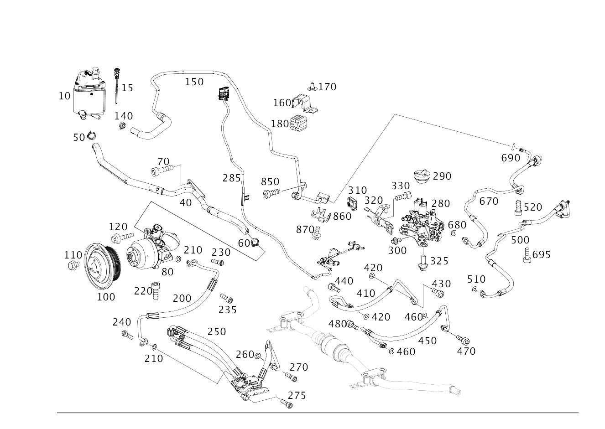

| № | Артикул | Название | Кол. | Примечание | Ограничение |
|---|---|---|---|---|---|
| 10 | A 166 320 01 14 | Масляный бак (OELBEHAELTER) | 1 | 468 | |
| 15 | A 166 320 00 00 | - Маслоизмерительный щуп (OELMESSSTAB) | 1 | В ПИТАЮЩ. МАСЛ. БАЧКЕ | 468 |
| 40 | A 166 320 07 55 | Всасывающий шланг (ANSAUGSCHLAUCH) | 1 | МАСЛ. БАЧОК К НАСОСУ | 468+M276+M002 |
| 50 | A 230 995 01 05 | Пружинный хомут (FEDERBANDSCHELLE) | 1 | ШЛАНГ К МАСЛЯНОМУ БАЧКУ; 24.0/26.8 MM | 468 |
| 60 | A 230 995 01 05 | Пружинный хомут (FEDERBANDSCHELLE) | 1 | ШЛАНГ К НАСОСУ; 24.0/26.8 MM | 468+(M642/M276) |
| 70 | N 000000 004310 | Винт с 6-гранной головкой (SECHSKANTSCHRAUBE) | 1 | КРЕПЛЕНИЕ ШЛАНГА; M6X10 | 468+M276 |
| 80 | A 000 329 17 03 | Насос гидравлический (HYDRAULIKPUMPE) | 1 | ARS M276 [697] ДЕТАЛЬ ПОСТАВЛЯЕТСЯ ТОЛЬКО/ИЛИ ТАКЖЕ КАК ЗАП.ЧАСТЬ | M276+M002+468 |
| 80 | A 000 329 03 00 | Насос гидравлический (HYDRAULIKPUMPE) | 1 | [697] ДЕТАЛЬ ПОСТАВЛЯЕТСЯ ТОЛЬКО/ИЛИ ТАКЖЕ КАК ЗАП.ЧАСТЬ | M276+M002+468 |
| 100 | A 000 466 29 15 | Ременный шкив (RIEMENSCHEIBE) | 1 | НАСОС | M276+M002+468 |
| 110 | N 000000 000274 | Винт с 6-гр. глвк (SECHSRUNDSCHRAUBE) | 3 | ШКИВ НА НАСОСЕ; M8X12 | M276+M002+468 |
| 120 | N 000000 001141 | Винт с 6-гр. глвк (SECHSRUNDSCHRAUBE) | 3 | НАСОС НА КАРТЕРЕ ГРМ; M8X34 | (M276/M276+M002)+468 |
| 140 | A 005 997 01 90 | Хомут для шланга (SCHLAUCHSCHELLE) | 1 | ОБРАТН. ТРУБОПРОВ. НА БАЧКЕ; 14\-24 MM | 468 |
| 150 | A 166 320 10 53 | Маслопровод НД (OELNIEDERDRUCKLEITUNG) | 1 | ОБРАТНЫЙ ТРУБОПРОВОД К БАЧКУ | 468 |
| 160 | A 002 995 61 01 | Крепежный хомут (BEFESTIGUNGSSCHELLE) | 3 | КРЕПЛЕНИЕ ТРУБКИ ОБРАТНОЙ МАГИСТРАЛИ | 468 |
| 170 | A 210 990 01 50 | Гайка 6-гранная с пояском (SECHSKANTMUTTER MIT BUND) | 4 | КРЕПЛЕНИЕ ХОМУТА; 5 MM | 468 |
| 180 | A 220 328 05 88 | Демпферная лента (DAEMPFUNGSSTREIFEN) | 3 | КРЕПЛЕНИЕ ТРУБКИ ОБРАТНОЙ МАГИСТРАЛИ [409] ПРИ МОНТАЖЕ ПОДОГНАТЬ ПО МЕСТУ | 468 |
| 200 | A 166 320 17 72 | Маслопровод ВД (OELHOCHDRUCKLEITUNG) | 1 | НАСОС К ТОЧКЕ РАЗЪЕДИНЕНИЯ | 468+M276+M002 |
| 210 | A 015 997 82 45 | - Кольцевая прокладка (O-RING) | 2 | К НАПОРНОМУ ТРУБОПРОВОДУ; 8X2MM | 468 |
| 230 | N 000000 003291 | Винт с 6-гр. глвк (SECHSRUNDSCHRAUBE) | 2 | НАПОРНЫЙ ШЛАНГ К НАСОСУ; M6X20 | 468 |
| 240 | N 000000 003552 | Винт с 6-гр. глвк (SECHSRUNDSCHRAUBE) | 1 | ШЛАНГ НА ШЛАНГЕ; M8X25 | 468 |
| 250 | A 166 320 19 72 | Маслопровод ВД (OELHOCHDRUCKLEITUNG) | 1 | ШЛАНГ К КЛАПАНУ [409] ПРИ МОНТАЖЕ ПОДОГНАТЬ ПО МЕСТУ | 468+(802/803/804/805) |
| 250 | A 166 320 18 72 | Маслопровод ВД (OELHOCHDRUCKLEITUNG) | 1 | ШЛАНГ К КЛАПАНУ [409] ПРИ МОНТАЖЕ ПОДОГНАТЬ ПО МЕСТУ | 468+(806/807/808/809/800) |
| 260 | A 015 997 82 45 | - Кольцевая прокладка (O-RING) | 1 | К НАПОРНОМУ ТРУБОПРОВОДУ; 8X2MM | 468 |
| 270 | N 000000 003552 | Винт с 6-гр. глвк (SECHSRUNDSCHRAUBE) | 1 | ШЛАНГ К КЛАПАНУ; M8X25 | 468 |
| 275 | N 910143 006002 | Винт с 6-гр. глвк (SECHSRUNDSCHRAUBE) | 2 | КРЕПЛЕНИЕ НАПОРНОЙ ТРУБКИ; M6X20 | 468 |
| 280 | A 166 320 11 58 | Блок клапанов (VENTILEINHEIT) | 1 | СПЕРЕДИ | 468 |
| 285 | A 166 440 03 33 | - Электрический жгут (ELEKTRISCHER LEITUNGSSATZ) | 1 | БЛОК КЛАПАНОВ | 468 |
| 290 | A 000 431 01 37 | - Резиновая опора (GUMMILAGER) | 3 | КЛАПАН. БЛОК СПЕРЕДИ | 468 |
| 300 | N 910143 006000 | - Винт с 6-гр. глвк (SECHSRUNDSCHRAUBE) | 2 | КРОНШТЕЙН К КЛАПАНУ; M6X12 | 468 |
| 310 | A 004 994 18 45 | SPRING NUT (FEDERMUTTER) | 2 | M8 | 468 |
| 320 | A 166 327 06 40 | Держатель (HALTER) | 1 | СПЕРЕДИ | 468 |
| 325 | N 000000 000276 | Винт с 6-гр. глвк (SECHSRUNDSCHRAUBE) | 2 | КРЕПЛЕНИЕ КЛАПАННОГО МОДУЛЯ; M8X20 | 468 |
| 330 | N 000000 000276 | Винт с 6-гр. глвк (SECHSRUNDSCHRAUBE) | 2 | ДЕРЖАТЕЛЬ НА ТРАВЕРСЕ; M8X20 | 468 |
| 350 | A 166 320 13 58 | Блок клапанов (VENTILEINHEIT) | 1 | СЗАДИ | 468 |
| 360 | A 000 431 01 37 | - Резиновая опора (GUMMILAGER) | 2 | КЛАПАН. МОДУЛЬ СЗАДИ | 468 |
| 370 | N 914007 006047 | - Винт с неспадающей шайбой (KOMBISCHRAUBE) | 2 | КЛАПАН. МОДУЛЬ СЗАДИ; M6X12 | 468 |
| 380 | N 910143 006000 | - Винт с 6-гр. глвк (SECHSRUNDSCHRAUBE) | 2 | КРОНШТЕЙН К КЛАПАНУ; M6X12 | 468 |
| 400 | N 000000 000276 | Винт с 6-гр. глвк (SECHSRUNDSCHRAUBE) | 3 | КРЕПЛЕНИЕ КЛАПАННОГО МОДУЛЯ; M8X20 | 468 |
| 405 | N 913024 008100 | Гайка заклепочная (NIETMUTTER) | 3 | К ПОПЕРЕЧИНЕ; 8X16\-ST | 468 |
| 410 | A 166 320 16 54 | Напорный маслопровод (OELDRUCKLEITUNG) | 1 | БЛОК КЛАПАНОВ К ПОВОРОТНОМУ РЕГУЛЯТОРУ A1 \- A1 | 468+(802/803/804/805) |
| 410 | A 166 320 45 54 | Напорный маслопровод (OELDRUCKLEITUNG) | 1 | БЛОК КЛАПАНОВ К ПОВОРОТНОМУ РЕГУЛЯТОРУ A1 \- A1 | 468+(806/807/808/809/800) |
| 420 | A 015 997 82 45 | - Кольцевая прокладка (O-RING) | 2 | К НАПОРНОМУ ТРУБОПРОВОДУ; 8X2MM | 468 |
| 430 | N 000000 003552 | Винт с 6-гр. глвк (SECHSRUNDSCHRAUBE) | 1 | НАПОРН. ТРУБОПР. НА КЛАПАНЕ; M8X25 | 468 |
| 440 | N 000912 008219 | Цилиндрич. винт (ZYLINDERSCHRAUBE) | 1 | НАПОРНЫЙ ТРУБОПРОВОД К ПОВОРОТНОМУ РЕГУЛЯТОРУ; M8X20 | 468 |
| 450 | A 166 320 42 54 | Напорный маслопровод (OELDRUCKLEITUNG) | 1 | БЛОК КЛАПАНОВ К ПОВОРОТНОМУ РЕГУЛЯТОРУ A2 \- A2 | 468+(802/803/804/805) |
| 450 | A 166 320 46 54 | Напорный маслопровод (OELDRUCKLEITUNG) | 1 | БЛОК КЛАПАНОВ К ПОВОРОТНОМУ РЕГУЛЯТОРУ A2 \- A2 | 468+(806/807/808/809/800) |
| 460 | A 015 997 82 45 | - Кольцевая прокладка (O-RING) | 2 | К НАПОРНОМУ ТРУБОПРОВОДУ; 8X2MM | 468 |
| 470 | N 000000 003552 | Винт с 6-гр. глвк (SECHSRUNDSCHRAUBE) | 1 | НАПОРН. ТРУБОПР. НА КЛАПАНЕ; M8X25 | 468 |
| 480 | N 000912 008219 | Цилиндрич. винт (ZYLINDERSCHRAUBE) | 1 | НАПОРНЫЙ ТРУБОПРОВОД К ПОВОРОТНОМУ РЕГУЛЯТОРУ; M8X20 | 468 |
| 500 | A 166 320 23 54 | Трубопровод выс. давления (HOCHDRUCKLEITUNG) | 1 | БЛОК КЛАПАНОВ ПЕРЕДНИЙ К МЕСТУ РАЗЪЕДИНЕНИЯ P | 468 |
| 510 | A 015 997 82 45 | - Кольцевая прокладка (O-RING) | 1 | К НАПОРНОМУ ТРУБОПРОВОДУ; 8X2MM | 468 |
| 520 | N 000000 003552 | Винт с 6-гр. глвк (SECHSRUNDSCHRAUBE) | 1 | КРЕПЛЕНИЕ ТРУБОПРОВОДА ВЫСОКОГО ДАВЛЕНИЯ; M8X25 | 468 |
| 530 | A 166 320 25 54 | Трубопровод выс. давления (HOCHDRUCKLEITUNG) | 1 | ОТ МЕСТА РАЗЪЕМА 1 ДО МЕСТА РАЗЪЕМА 2 | 468 |
| 550 | A 166 320 05 54 | Трубопровод выс. давления (HOCHDRUCKLEITUNG) | 1 | МЕСТО РАЗЪЕДИНЕНИЯ К ЗАДНЕМУ БЛОКУ КЛАПАНОВ | 468 |
| 560 | A 015 997 82 45 | - Кольцевая прокладка (O-RING) | 1 | К НАПОРНОМУ ТРУБОПРОВОДУ; 8X2MM | 468 |
| 570 | N 000000 003552 | Винт с 6-гр. глвк (SECHSRUNDSCHRAUBE) | 1 | ТРУБОПРОВОД НИЗКОГО ДАВЛЕНИЯ К БЛОКУ КЛАПАНОВ; M8X25 | 468 |
| 580 | A 166 320 26 54 | Напорный маслопровод (OELDRUCKLEITUNG) | 1 | БЛОК КЛАПАНОВ К ПОВОРОТНОМУ РЕГУЛЯТОРУ B1 \- B1 | 468 |
| 590 | A 015 997 82 45 | - Кольцевая прокладка (O-RING) | 2 | К НАПОРНОМУ ТРУБОПРОВОДУ; 8X2MM | 468 |
| 595 | N 000000 003552 | Винт с 6-гр. глвк (SECHSRUNDSCHRAUBE) | 1 | НАПОРН. ТРУБОПР. НА КЛАПАНЕ; M8X25 | 468 |
| 600 | A 166 320 44 54 | Напорный маслопровод (OELDRUCKLEITUNG) | 1 | БЛОК КЛАПАНОВ К ПОВОРОТНОМУ РЕГУЛЯТОРУ B2 \- B2 | 468 |
| 605 | A 100 997 08 81 | - Проходная втулка (DURCHFUEHRUNGSTUELLE) | 1 | 468 | |
| 610 | A 015 997 82 45 | - Кольцевая прокладка (O-RING) | 2 | К НАПОРНОМУ ТРУБОПРОВОДУ; 8X2MM | 468 |
| 615 | N 000912 008219 | Цилиндрич. винт (ZYLINDERSCHRAUBE) | 2 | НАПОРНЫЙ ТРУБОПРОВОД К ПОВОРОТНОМУ РЕГУЛЯТОРУ; M8X20 | 468 |
| 617 | N 000000 003552 | Винт с 6-гр. глвк (SECHSRUNDSCHRAUBE) | 1 | КРЕПЛЕНИЕ НАПОРНОЙ ТРУБКИ; M8X25 | 468 |
| 620 | A 166 320 15 53 | Маслопровод НД (OELNIEDERDRUCKLEITUNG) | 1 | БЛОК КЛАПАНОВ ЗАДНИЙ К МЕСТУ РАЗЪЕДИНЕНИЯ T | 468 |
| 630 | A 015 997 82 45 | - Кольцевая прокладка (O-RING) | 1 | К НАПОРНОМУ ТРУБОПРОВОДУ; 8X2MM | 468 |
| 635 | N 000000 003552 | Винт с 6-гр. глвк (SECHSRUNDSCHRAUBE) | 1 | НАПОРН. ТРУБОПР. НА КЛАПАНЕ; M8X25 | 468 |
| 650 | A 166 320 11 53 | Маслопровод НД (OELNIEDERDRUCKLEITUNG) | 1 | ОТ МЕСТА РАЗЪЕМА 2 ДО МЕСТА РАЗЪЕМА 1 | 468 |
| 660 | A 015 997 22 45 | - Кольцевая прокладка (O-RING) | 1 | К НАПОРНОМУ ТРУБОПРОВОДУ | 468 |
| 670 | A 166 320 13 53 | Маслопровод НД (OELNIEDERDRUCKLEITUNG) | 1 | КЛАПАН К РАСПРЕДЕЛИТ. T | 468 |
| 680 | A 015 997 82 45 | - Кольцевая прокладка (O-RING) | 1 | К НАПОРНОМУ ТРУБОПРОВОДУ; 8X2MM | 468 |
| 690 | A 015 997 22 45 | - Кольцевая прокладка (O-RING) | 1 | К НАПОРНОМУ ТРУБОПРОВОДУ | 468 |
| 695 | N 000000 003552 | Винт с 6-гр. глвк (SECHSRUNDSCHRAUBE) | 1 | ТРУБОПРОВОД НИЗКОГО ДАВЛЕНИЯ К БЛОКУ КЛАПАНОВ; M8X25 | 468 |
| 720 | A 002 995 61 01 | Крепежный хомут (BEFESTIGUNGSSCHELLE) | 1 | ПРОВОД НА ТРАВЕРСЕ | 468 |
| 730 | A 220 328 05 88 | Демпферная лента (DAEMPFUNGSSTREIFEN) | 1 | ПРОВОД НА ТРАВЕРСЕ [409] ПРИ МОНТАЖЕ ПОДОГНАТЬ ПО МЕСТУ | 468 |
| 735 | N 913024 006101 | Гайка заклепочная (NIETMUTTER) | 1 | НА ХОМУТЕ; M6X15,7\-ST | 468 |
| 740 | N 910143 006002 | Винт с 6-гр. глвк (SECHSRUNDSCHRAUBE) | 1 | КРЕПЛЕНИЕ ХОМУТА; M6X20 | 468 |
| 745 | A 210 990 01 50 | Гайка 6-гранная с пояском (SECHSKANTMUTTER MIT BUND) | 1 | НА ТРАВЕРСЕ СЗАДИ; 5 MM | 468 |
| 750 | A 002 995 82 01 | Крепежный хомут (BEFESTIGUNGSSCHELLE) | 4 | НА ДНИЩЕ | 468 |
| 760 | A 220 328 01 88 | Демпферная лента (DAEMPFUNGSSTREIFEN) | 4 | НА ДНИЩЕ [402] БОЛЬШЕ НЕ ПОСТАВЛЯЕТСЯ | 468 |
| 770 | A 210 990 01 50 | Гайка 6-гранная с пояском (SECHSKANTMUTTER MIT BUND) | 4 | КРЕПЛЕНИЕ ХОМУТА; 5 MM | 468 |
| 775 | A 000 998 72 21 | Защитный колпачок (ABDECKKAPPE) | 1 | КРЕПЛЕНИЕ ХОМУТА | |
| 780 | A 000 995 54 75 | Проставка (ABSTANDSHALTER) | 1 | НАПОРНЫЙ ТРУБОПРОВОД И ОБРАТНЫЙ ТРУБОПРОВОД | 468 |
| 790 | A 166 328 05 40 | Держатель (HALTER) | 1 | НАПОРНЫЙ ТРУБОПРОВОД И ОБРАТНЫЙ ТРУБОПРОВОД | 468 |
| 800 | N 000000 004310 | Винт с 6-гранной головкой (SECHSKANTSCHRAUBE) | 1 | КРЕПЛЕНИЕ КРОНШТЕЙНА; M6X10 | 468 |
| 810 | N 913024 008100 | Гайка заклепочная (NIETMUTTER) | 1 | БАЛКА ЗАДНЕГО МОСТА; 8X16\-ST | 468 |
| 820 | N 000000 000276 | Винт с 6-гр. глвк (SECHSRUNDSCHRAUBE) | 1 | ТРУБОПРОВОД НА БАЛКЕ ЗАДНЕГО МОСТА; M8X20 | 468 |
| 830 | N 000000 003477 | Гайка (MUTTER) | 1 | КРЕПЛЕНИЕ НАПОРНОЙ ТРУБКИ; M6 | 468 |
| 830 | N 000000 003175 | Гайка (MUTTER) | 1 | КРЕПЛЕНИЕ НАПОРНОЙ ТРУБКИ; M8 | 468 |
| 840 | N 000000 003477 | Гайка (MUTTER) | 1 | КРЕПЛЕНИЕ НАПОРНОЙ ТРУБКИ; M6 | 468 |
| 840 | N 000000 003175 | Гайка (MUTTER) | 1 | КРЕПЛЕНИЕ НАПОРНОЙ ТРУБКИ; M8 | 468 |
| 850 | N 910105 008008 | Винт с 6-гранной головкой (SECHSKANTSCHRAUBE) | 1 | КРЕПЛЕНИЕ ТРУБКИ ОБРАТНОЙ МАГИСТРАЛИ; M8X16 | 468 |
| 860 | A 166 327 02 42 | Крепежная пластина (BEFESTIGUNGSPLATTE) | 1 | ОБРАТНЫЙ ТРУБОПРОВОД К РАСПРЕДЕЛИТЕЛЮ | 468 |
| 870 | N 000000 001475 | Винт с 6-гр. глвк (SECHSRUNDSCHRAUBE) | 1 | КРЕПЁЖНАЯ ПЛАСТИНА НА РАСПРЕДЕЛИТЕЛЕ; M6X12 | 468 |
Позиций: 94 · подписано на схемах: 94 · колесо — плавный зум в курсор, перетаскивание — пан, двойной клик — зум, клик по артикулу — скопировать · наведите на строку или цифру на схеме — подсветка связки, клик — закрепить.